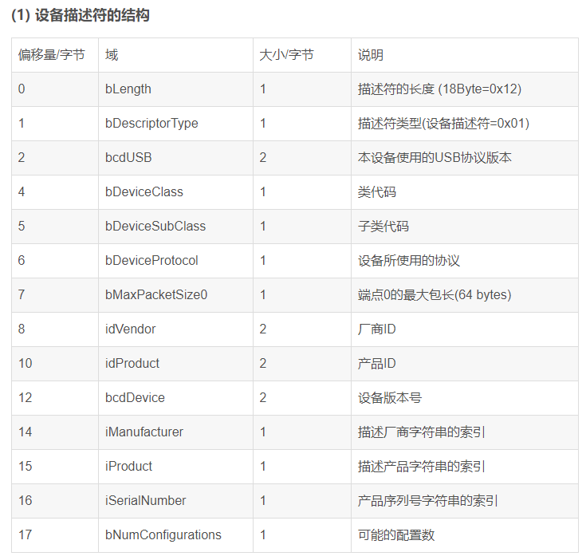

USB枚举和配置¶
开发者一般将枚举视为 USB 设备中的单一程序。实际上，枚举是三个阶段的其中一个：动态检测、枚举、配置。动态检测是指识别 USB 端口状态的变化。主机/集线器端接有下拉电阻，在某个设备被插入时，根据该设备的速度，相应线将被上拉。主机/集线器通过电压变换来检测总线端口状态的变化。枚举阶段紧接着设备检测阶段。枚举指的是给新插入设备分配唯一地址的过程。配置阶段是指通过交换设备请求来确定设备性能的过程。主机用来了解设备的请求是标准请求。所有 USB 设备都要支持这类请求。
动态检测¶
第一步： 设备被连接到 USB 端口上，并得到检测。此时，设备可从总线吸收 100 mA 的电流，并处于被供电状态。
第二步： 集线器通过监控端口的电压来检测设备。集线器的 D+ 线和 D- 线上带有下拉电阻。根据设备的速度， D+ 或 D- 线上会带有上拉电阻。通过监控这些线上的电压变换，集线器检测设备是否得到连接。
枚举¶
第三步： 主机使用中断端点获得集线器状态（包括端口状态的变化），从而了解新连接的设备。主机从集线器获得设备检测情况后，它会向集线器发送一个请求，以便询问在 GET_PORT_STATUS 请求有效时所发生状态变化的详细信息。
第四步： 主机收集该信息后，通过确定上拉电阻位于 D+ 线还是 D- 线，集线器可以检测设备速度是全速还是低速。通过另一个 GET_PORT_STATUS 请求，该信息被报告给主机。
第五步： 主机向集线器发送 SET_PORT_FEATURE 请求，要求它复位新连接的设备。通过将 D+ 和 D- 线下拉至 GND（ 0 V），使设备进入复位状态。这些线处于低电平状态的时间长达 2.5 us，因此发生复位条件。集线器在 10 ms 内维持复位状态。
第六步： 复位期间发生一系列 J-State 和 K-State，这样是为了确定设备是否支持高速传输。如果设备支持高速，它会发出一个单一的 K-State。高速集线器检测该 K-State 并用 J 和 K 顺序（组成“KJKJKJ” 格式）来回应。设备检测到该格式后，它会移除 D+ 线上的上拉电阻。低速设备和全速设备则会忽略这一步。
第七步： 通过发送 GET_PORT_STATUS 请求，主机检查设备是否仍处于复位状态。如果设备仍处于复位状态，则主机会继续发送请求，直到它得知设备退出复位状态为止。设备退出复位状态后，它便进入默认状态。现在，设备可以回应主机的请求，具体是对其默认地址 00h 进行控制传输。所有 USB 设备的起始地址均等于该默认地址。每次只能有一个 USB 设备使用该地址。因此，同时将多个 USB 设备连接到同一个端口时，它们会轮流进行枚举，而不是同时枚举。
第八步： 主机开始了解有关设备的更多信息。首先，它要知道默认管道（端点 0）的最大数据包大小。主机先向设备发送 GET_DESCRIPTOR 请求。设备发给主机相应描述符。在设备描述符中，第八个字节（ bMaxPacketSize0）包含了有关 EP0 最大数据包尺寸的信息。 Windows 主机要求 64 字节，但仅在收到 8 字节设备描述符后它才转换到控制传输的状态阶段，并要求集线器复位设备。 USB 规范要求，如果设备的默认地址为 00h，当它得到请求时，设备至少要返回 8 字节设备描述符。要求 64 字节是为了防止设备发生不确定行为。此外，仅在收到 8 字节后才进行复位的操作是早期 USB 设备遗留的特性。在早期 USB 设备中，当发送第二个请求来询问设备描述符时，某些设备没有正确回应。为了解决该问题，在第一个设备描述符请求后需要进行一次复位。被传输的 8 字节包含 bMaxPacketSize0 的足够信息。
第九步： 主机通过 SET_ADDRESS 请求为设备分配地址。在使用新分配地址前，设备使用默认地址 00h 完成所请求的状态阶段。在该阶段后进行的所有通信均会使用新地址。如果断开与设备的连接、端口被复位或者 PC 重启，该地址可能被更改。 现在，设备处于地址状态。
配置¶
第十步： 设备退出复位状态后，主机会发送 GET_DESCRIPTOR 命令，以便使用新分配地址读取设备的描述符。不过，此次所有描述符均被读取。主机通过该信息了解设备及其性能。该信息包含外设接口数量、电源连接方法以及所需要的最大电源。主机先请求设备描述符，而这一次它将收到全部描述符，而不仅是描述符的一部分。然后，主机将发送另一个 GET_DESCRIPTOR 命令，以便询问配置描述符。该请求的结果不仅是配置描述符，并且还包含了与配置描述符相关联的所有描述符，如接口描述符和端点描述符。 Windows PC 首先只询问配置描述符（ 9 个字节），然后它会发送第二个 GET_DESCRIPTOR 请求，询问配置描述符以及与配置描述符相关联的所有描述符（如接口和端点描述符）。
第十一步： 为了让主机 PC（此情况是 Windows PC）成功使用设备，主机必须加载设备驱动程序。主机会搜索一个用于管理它与设备通信的驱动程序。 Windows 使用它的 .inf 文件寻找与设备产品 ID 和供应商 ID 匹配的驱动程序。也可以选择性寻找与设备发布版本号匹配的程序。如果 Windows 未能找到匹配的驱动程序，它会寻找与设备的类别、子类以及协议相匹配的程序。如果设备先前已经进行了枚举， Windows 会使用设备所注册的信息来寻找合适的驱动程序。确定好驱动程序后，主机可能请求设备的特定描述符或者请求设备重新发送描述符。
第十二步： 收到所有描述符后，主机使用 SET_CONFIGURATION 请求进行特殊的设备配置。大部分设备只有唯一一种配置。对于支持多项配置的设备，用户或驱动程序可选择合适的配置。
第十三步： 此时设备将处于配置状态。它将按照描述符所定义的性能进行操作。所定义的最大电源是从 VBUS 吸取的。
现在就可以在应用中使用设备。
枚举过程图解¶
Host获取设备描述符¶
主机向 地址为0的设备 的 端点0 发送获取设备描述符的 标准请求 。
USB的标准请求:
USB协议定义了一个8字节的标准设备请求，标准请求发生在设备的枚举过程中。
USB获取设备描述符的标准请求:
USB协议定义了11个标准请求（bRequest）。这11个标准请求的名字和对应的编号如下表。
因为主机请求的是设备描述符，所以，这里返回的是USB设备的设备描述符数据。
设备描述符
每个USB设备都 必须并且只有一个 设备描述符(在程序中有定义)。USB协议对设备描述符的定义如下：

说明：
1）bcdUSB是该设备所使用的USB协议版本号，长度2字节。比如可以取2.0或者1.1等版本号。需要特别注意的是，协议规定使用BCD码来表示版本号，比如：USB2.0协议就是0x0200，USB1.1协议就是0x0110。对照USB协议分析仪来看的时候，要注意，USB协议中使用的是小端结构，也就是低字节在前。比如说，USB2.0协议拆分成两个字节就是0x00 0x02，那么对照协议分析仪里面的数据就是：00 02 ；USB1.1在协议分析仪里面的数据就是：10 01。
2）bDeviceClass是设备所使用的类代码（XX类接口描述符码）。常用的类如下(根据协议，进行C宏定义)：
//HID设备类接口描述符码
#define HID_CLASS 0x03
//音频类接口描述符码
#define Audio_CLASS 0x01
//视频类接口描述符码
#define Vedio_CLASS 0x0E
//大容量设备类接口描述符码
MASS_STORAGE_CLASS 0x08
//杂项类或者混合类接口描述符码
#define MISC_CLASS 0xEF
//厂商自定义的设备类接口描述符码
#define CUSTOM_CLASS 0xFF
//特定应用类接口描述符码
#define DFU_DEVICE_CLASS 0xFE
3）bDeviceSubClass设备所使用的子类代码。当类代码不为0也不是0xFF时，子类代码就得根据协议来进行赋值。当类代码为0的时候，子类代码也必须为0。
4）bDeviceProtocol是设备使用的协议。协议代码由USB协议规定。当该字段为0的时候，表示设备不使用类所定义的协议。该字段为0xFF的时候，表示使用的是厂商自定义的协议。也就是说，bDeviceProtocol要结合设备类和设备子类来进行赋值，如果设备类代码不为0，则子类代码肯定也不为0，进而bDeviceProtocol也就不为0（具体的取值，得深入研究USB协议）。如果类代码为0，则子类代码也就为0，进而bDeviceProtocol的值也就为0。综上所述，bDeviceClass、bDeviceSubClass、bDeviceProtocol这三者，要么都同时为0，要么都不为0。一般来说，设备类的定义放到接口里面，所以这三个字段一般都设置为0。
5）端点0的最大包长，取值可以是:8、16、32、64字节。注意，对应的十六进制数分别就是：0x08、0x10、0x20、0x40(分析源码和协议分析仪里面的数据，注意进行转换)。
6）关于厂商ID (2Byte)，在开发中，可以随意设定一个值。真正做产品，要使用公司的ID(向USB协会申请)，避免侵权。对于插入的设备，主机是依靠厂商ID号、产品ID号、产品序列号来安装驱动的。
7）产品ID是生产厂商自己定义的，比较自由。
8）bcdDevice设备版本号。同一个产品，升级之后(比如固件修改，新增功能)，可以通过修改设备版本号来进行区别。
9）iManufacturer是描述厂商字符串的索引值。如果设为0，则表示该USB设备没有厂商字符串。主机单独获取厂商字符串的时候，下发的标准请求数据包中，wValue域的第一个字节【低字节】就是厂商字符串的索引值，而高字节就是描述符的类型(字符串描述符0x03)。
厂商字符串就是一串普通的字符串，在设备描述符中，有三个非0的索引值：厂商字符串的索引值为1；产品字符串的索引值为2；产品序列号字符串的索引为3。设备在收到主机的字符串描述符请求之后，根据索引值，将对应的字符串数据返回给主机。所以，如果解析到主机字符串描述符请求的数据包，如果wValue=0x0301，则表示主机请求获得厂商字符串。
10）iProduct是描述产品的字符串的索引值。同样的，如果设置为0，则表示该USB设备没有产品字符串。第一次插上设备时，提示发现新硬件，并显示设备的名称，其实这里显示的信息就是从产品字符串中获取的。实验:可通过修改产品字符串，再编译固件烧录，插入设备，就可以看到提示信息了。
同理，当主机请求产品字符串的时候，wValue这个域的值应该是：0x0302
11）iSerialNumber是设备的序列号字符串的索引值。同样的，如果设置为0，则表示该USB设备没有设备序列号。最好一个产品指定一个唯一的序列号，因为有可能主机会结合产品序列号和VID、PID来进行设备的区分和加载对应的驱动。
同理，当主机请求序列号字符串的时候，wValue这个域的值应该是：0x0303
注： 厂商ID 、产品ID和序列号字符串是不一样的。
复位总线¶
这次复位是正常复位。
如果主机第一次获取设备描述符之后，一直复位(异常复位)，很大情况下是因为获取设备描述符的过程有错(返回的数据或者数据长度都有错)！比如：在一次验证FPGA的过程中，设备栈刚移植结束，跑起Demo之后，发现获取设备描述符后，Host一直复位总线，如下：

将数据展开，仔细分析后发现有错：返回的长度和数据内容都有错。
应该是18字节的设备描述符，而这里返回的是64字节的错误数据。说明底层设备栈能解析指令，但是在回复设备描述符处理上有误。
设置地址阶段¶
主机在收到第一个数据包（设备描述符数据包），确认无误，下发一个0长度的确认数据包之后，复位总线，接下来就进入设置地址阶段。也就是说，接下来下发的是一个设置地址请求。
再次获取设备描述符¶
这个过程，能说明两点：
（1）主机请求设备设置某个指定的地址，已经成功请求，并且设备已经启用了新的地址。
（2）接下来设备能使用新的地址和主机进行通信了。
获取配置描述符集合¶
一个正常的配置描述符请求过程
主机获取配置描述符集合，比较正常的请求过程应该是这样的：第一次先获取9字节长度的配置描述符，然后根据配置描述符中配置集合的长度，再次获取配置描述符集合。第二次获取的时候，设备会将配置描述符、接口描述符、类特殊描述符、端点描述符等一并返回。这是一个比较合理的配置描述符请求过程
字符串描述符的请求¶
语言ID描述符和字符串描述符的请求
又再一次获取设备描述符¶
又再一次获取配置描述符¶
这次和第一次获取描述符有所不同，第一次获取配置描述符，请求的长度是255(0xFF)字节。我们可以认为这是不合理的，正确的请求应该是：第一次先获取9字节长度的配置描述符，然后根据配置描述符中配置集合的长度，再次获取配置描述符集合。第二次获取的时候，设备会将配置描述符、接口描述符、类特殊描述符、端点描述符等一并返回。这里分两次获取，也就是有两个事务（或者说有两次数据传输）。这一次获取配置描述符，是比较合理的请求。
设置配置请求¶
经过上面的步骤之后，主机下发了设置配置的请求。回顾一下，上文中配置描述符的结构以及在程序代码中的定义，需要注意的是配置描述符的bConfigurationValue这个域。一个USB设备可以有很多个配置。bConfigurationValue就是每个配置的标识！主机请求设置配置的时候，会下发一个配置值，如果某个配置的bConfigurationValue和主机请求的配置值相匹配，就表示该配置被激活，USB设备就使用这个配置。(由主机决定，设备使用哪个配置)
设置配置请求是一个输出请求，根据所请求的配置值，使能相应的端点。设备收到之后，返回一个0长度的状态数据包。设备收到非0的配置值之后，才会使能非0端点。否则会禁用非零端点。
设置接口请求¶
重复请求两次产品字符串描述符¶
每次请求产品字符串描述符又分为两个过程（两个事务）：
（1）请求获得字符串描述符，希望设备返回4字节[字符串描述符的前4个字节！]。
（2）第二次，再次请求，这次是根据第一次获取到的信息，请求返回22字节的产品字符串描述符。
Set_Idle请求¶
接下来，在总线上可以看到，主机发了一个bRequest为0XA0的类输出请求。这就需要去查阅一下HID协议文档，HID协议规定了一些类请求。比如：Set_Idle、Get_Idle、Set_Report、Get_Report等，其中编码为0XA0代表是一个Set_Idle请求，关于HID这部分，在枚举阶段就先作了解（上文讲到的HID描述符、报告描述符等也是属于HID协议的内容），后面会单独解析各种USB类（HID类、音频类、视频类、大容量类……）。
这个请求是什么意思呢？这个请求告诉设备，在没有新的事件发生时，不要从中断端点返回数据。那么对于一个普通的HID设备，比如是鼠标。收到这个请求，可以什么都不用干，直接返回一个0长度的状态数据包即可。
获取HID报告描述符¶
接着，主机又发送了一个获取描述符的请求，从串口打印中，解析指令后可知：
（1）这是一个获取报告描述符的请求（描述符代码为wValue=0x2200 ---> HID协议中有规定，这是一个报告描述符类型）
（2）这个请求的接收者是接口（bmRequestType的D4~D0的位值为1，也就是说bmRequestType=0x81）
又一次获取产品字符串描述符¶
又一次设置接口¶
一个未知的HID中断输出请求¶
这个请求不用管。